Our previous post described three places to watch for anomalies: external events, stated intent, and the residual stream, the layer-by-layer activations inside the model during a forward pass. This post focuses on the third. They are richer than any prompt or response you can read at the boundary, yet they have been mainly overlooked for two reasons:
Those barriers kept security at the perimeter. We lay out platonic codes, a shared coordinate system that compresses activations into comparable routes, so anomaly detection can sit next to inference. This is not an internal guardrail that blocks known bad strings. It is behavioral anomaly detection: learn what typical routes look like, then flag runs that fork, including zero-day patterns no rulebook ever named. What follows is the concept, and a simple first test of how to extract such codes from the stream.
Detecting anomalies in the residual stream requires a way to compare runs, not a dictionary of what each activation means. Mechanistic interpretability asks: what is the model doing, and can a human read it? Anomaly detection asks a different question: does this run follow a known path, or has it diverged?
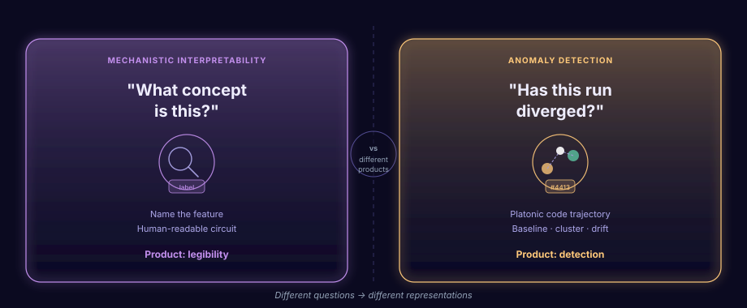
Interpretability builds human-readable features: sparse autoencoders, crosscoders, circuit diagrams. That work matters when a person needs to understand what the model is doing.
Anomaly detection takes a different approach, and a different job than blocking. It assigns each behavior a platonic code: the same code for the same behavior, across models, without being thrown off by each architecture's idiosyncrasies. Then it asks whether the route is typical, not whether it matched a rule.
You don't need to explain the representation. You need to detect when it diverges.
An anomaly in the residual stream is not a toxic token or a suspicious log event, and it is not a guardrail match against a blocklist. It is a fork in the route: the computation took a path through the layers that typical behavior does not take. To catch that, you compare trajectories layer by layer: Does this run match its baseline? Does it cluster with known benign behavior, or fork away as something new? Has the distribution of routes shifted over time? A single embedding or boundary snapshot cannot answer any of these. You need a sequence of codes through the full stack, decoded where inference already runs, not shipped out after the fact.
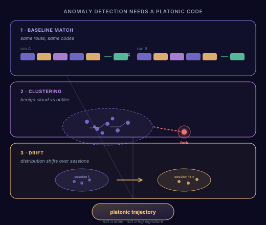
Baseline match: does this run follow the same code route as previous runs of the same task? Clustering: does it group with known benign behavior, or sit as an outlier, a route you have never seen? Drift: over time, has the overall distribution of routes shifted?
All three checks require a platonic trajectory, a layer-by-layer code sequence, not a semantic label or event signature. Novel forks surface even when the attack pattern is new. The next section shows how to build one.
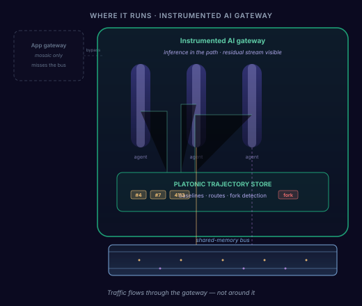
That requires instrumentation inside the inference path, not a filter at the perimeter. Residual streams are giant mathematical objects (a full activation vector at every layer) and they are expensive to move. You cannot cheaply ship them to a separate analytics pipeline after the fact.
Compute once, use it for security. The model already materializes these activations on every forward pass. Read them where inference runs, decode them into platonic codes, and reuse that same work for baseline matching and fork detection, instead of paying the cost twice.
An instrumented AI gateway sits where model calls actually flow: layer-by-layer activations decoded into platonic codes at inference time, and cross-agent traffic on the shared-memory bus tracked before the next hop. A classic app gateway sees only boundary inputs and outputs and misses both surfaces. In-path instrumentation does not.
Capable models appear to share underlying geometry, per the Platonic Representation Hypothesis. If that holds, you can assign behaviors to platonic codes that capture shared structure across models, rather than each model's private, incompatible activations.
Raw activations live in each model's private coordinate system, incomparable across architectures. Platonic codes project into a shared frame that is the same everywhere. Baseline match, clustering, and drift then measure real behavioral differences, not architectural noise.
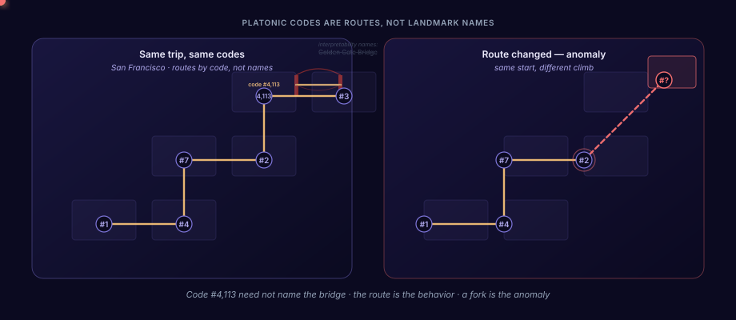
Mechanistic interpretability names what it finds: a sparse feature becomes "Golden Gate Bridge." Platonic codes use the same underlying geometry, but track routes by code number, not by landmark name. You never need to know what a turn represents on the map. You only need where it falls in the path.
What matters is the full path, the ordered sequence of code turns a behavior takes through the stack. Same task, same route, same codes. When a run matches baseline and then forks onto a new path, that fork is the anomaly.
If platonic codes can support anomaly detection, the geometry should be measurable. We test that idea with a deliberately simple assignment rule, not because it is optimal, but because it is enough to ask whether the shared structure exists at all. Assign codes from a fixed set of reference prompts, read the resulting trajectories, and run three checks to see whether the signal holds.
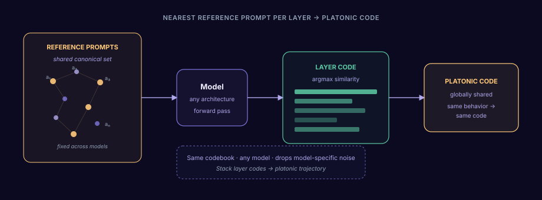
Start with a small, fixed set of reference prompts: canonical behaviors that every model can run. At each layer, find the reference prompt whose activation is most similar to the current state. That reference prompt's index becomes the platonic code at that depth.
Stack those per-layer codes into a sequence, a route through the stack. The heatmaps below visualize exactly that. The rule is minimal on purpose: if platonic geometry is real, even this should leave a signal.
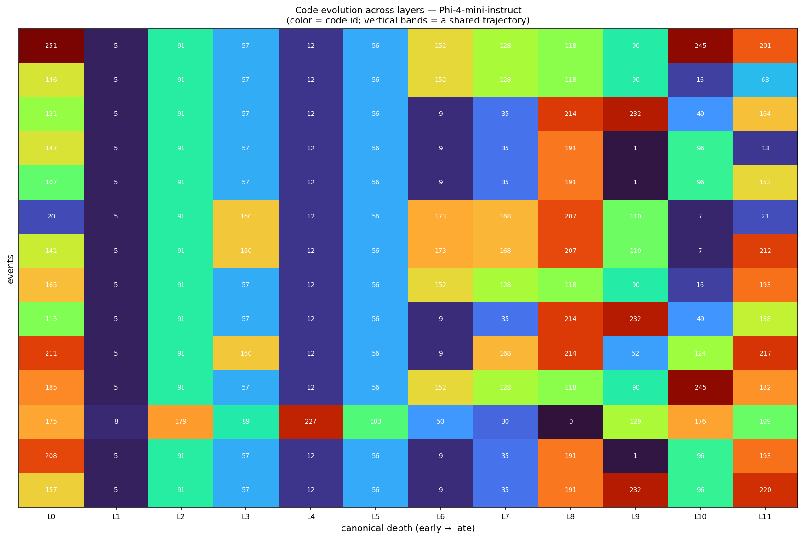
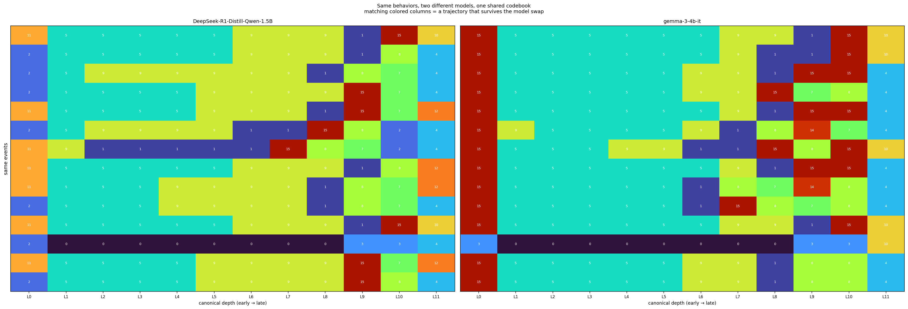
Same behaviors, different models, same assignment rule. The colored band in the middle layers appears in both panels: ~0.75–0.86 per-depth agreement, versus ~0.06 expected by chance.
The platonic route survives the model swap. Early and late layers stay model-specific; the shared computation in the middle is what the code captures and what makes cross-model comparison possible.
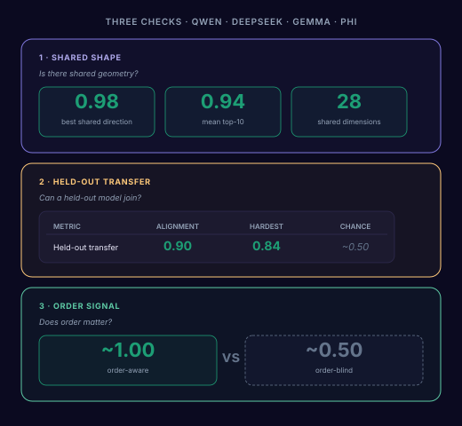
Four models. Three questions. Does the platonic route generalize?
Shared shape. Do capable models agree on the underlying directions? Yes: 0.98 best-pair alignment, 0.94 mean top-10, 28 shared dimensions across models.
Held-out transfer. Does a model never used to build the codebook still align? Yes: 0.90 alignment (0.84 on the hardest pair), well above the ~0.50 chance baseline.
Order signal. Does the sequence of layers matter, or just the set of codes? Scramble the layer order and agreement drops to ~0.50. The path matters, not just the bag of codes.
Agreement well above chance, especially across models at the same layer, is the signal we were looking for. But it raises a prior question: why should cross-model comparison on the residual stream work at all? The intro flagged activations as private, model-specific coordinates. The heatmaps say those coordinates can still agree if what you compare is geometry, not the raw numbers.
Elhage et al. show the residual stream has no privileged basis: rotate the coordinate system consistently and behavior is unchanged. Angles, distances, and subspaces are what carry, not the labels on the axes. Two models encoding the same concept in differently rotated coordinates is symmetry, not disagreement.
Procrustes alignment exploits that: find the rotation that best maps one point cloud onto another. Platonic codes bet the same way, but upfront: a codebook every model projects into, instead of pairwise rotation after the fact.
What we show is a proof of concept, not a final codebook design. Open questions remain: how to optimally derive platonic codes, how large the set should be, and how to maximize separability across behaviors. One direction is a carefully engineered reference prompt set: prompts tuned to span distinct computational directions, pushed to the literary extreme in something like Joyce-style instructions from Finnegans Wake, text so densely layered that critics describe it in quantum-theoretic terms. Another is to curate the set through reinforcement learning, optimizing coverage and alignment directly. Nearest-reference assignment is intentionally simple: transparent, reproducible, and enough to ask whether the platonic geometry is real.
You don't need to name what the model is doing. You need to know whether the route has changed.
Detect the path. Compare to baseline. Flag the fork.